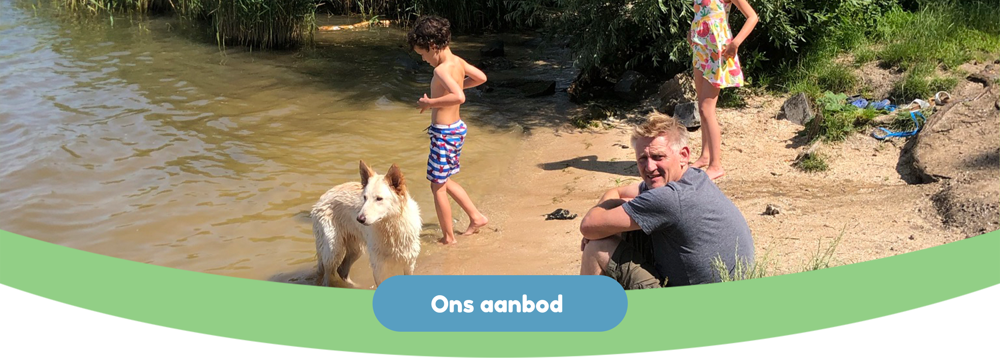
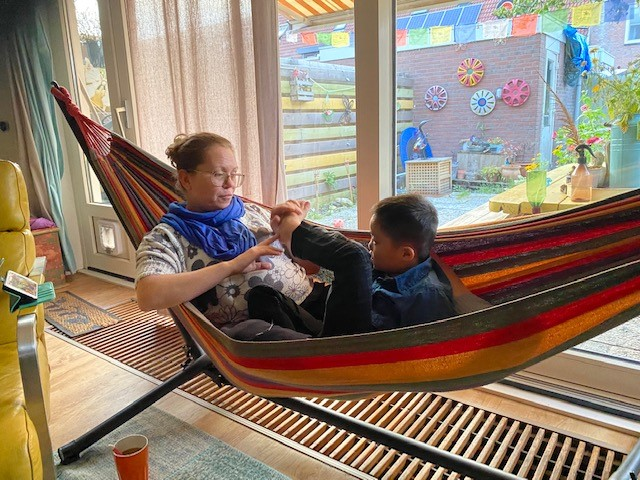
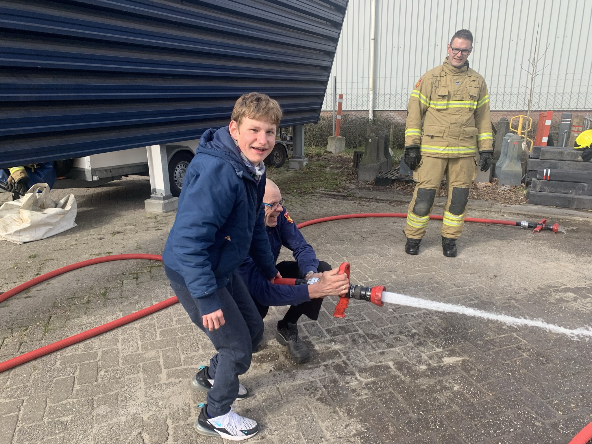

 Op dit moment, begin 2023, bieden we opvang aan meerdere kinderen via PGB, ze komen niet allemaal tegelijk. Sommige kinderen komen tegelijk maar dat doen we alleen als dat passend is. Afhankelijk van wat het kind nodig heeft en wat de ouders willen, bieden wij een passende opvang. Zo hebben we een meisje dat elke woensdag en vrijdag na dagbesteding bij ons komt eten. Zij is graag bij ons en voelt zich veilig waardoor haar (alleenstaande) moeder even niet hoeft te zorgen.
Op woensdag biedt een van ons dagbesteding aan een jongetje, we trainen dan schoolse vaardigheden en werken aan gedrag (bijvoorbeeld het leren omgaan met frustraties en het incasseren van veranderingen). Op diezelfde woensdag komt er een jongetje na school bij ons, hij krijgt een gezellige middag met verschillende activiteiten. Hij eet ook bij ons en we oefenen daarbij om gevarieerd te eten.
Elke donderdag komt er een jongetje bij ons logeren. Hij heeft vaak moeilijke nachten en zo heeft zijn gezin 1 dag in de week de rust om bij te tanken en samen leuke dingen te doen waarbij de andere kinderen het middelpunt kunnen zijn.
 Om het weekend hebben we weekendopvang. Er zijn kinderen die dan komen logeren maar ook die alleen overdag komen. De reden dat de kinderen komen zijn wisselend. Zo zijn er die bij ons komen om thuis wat ontlasting te bieden maar we hebben ook een jongen die bij ons komt om zijn wereld te vergroten, om op een andere plek te zijn dan alleen thuis. We richten ons dan vooral op een fijn weekend hebben, we gaan veel naar buiten en ondernemen veel verschillende activiteiten. Ook hierbij letten we uiteraard op de behoeftes van de kinderen, soms splitsen we op, als een activiteit niet passend is voor alle kinderen. Naast bovenstaande opvang bieden we ook vakantie-opvang aan. We hebben meerdere kinderen die soms voor langere periode bij ons verblijven, bijvoorbeeld tijdens een vakantie van ouders of tijdens het herstel van een operatie.
Wij zijn dit gestart omdat we het belangrijk vinden dat kinderen, naast hun veilige thuis, een plek hebben waar ze zich thuis voelen en waar ze, in huiselijke sfeer, zich kunnen ontwikkelen. Communicatie met ouders is belangrijk. We zullen altijd alles overleggen en houden rekening met wensen, gewoontes en geloof van de ouders. We werken zo transparant mogelijk en zullen per kind en per situatie afspraken maken met ouders.
Naast de opvang bij ons thuis zijn er nog een paar dingen die we kunnen aanbieden:
- Coaching gesprekken: Mocht je als ouders vast lopen op bepaalde zaken rondom je kind, denken we graag mee. Met onze ervaring van jaren hebben we al veel gezien en veel kennis op gedaan. Samen komen we vast tot een oplossing. Zo kunnen we bepaalde dingen oefenen met een kind tijdens de opvang en helpen dat thuis te implementeren.
- Begeleiding thuis: Michiel vindt het, als dat uw wens is, leuk om bij u thuis uw kind te begeleiden. Gebke werkt alleen vanuit het GEMi-huis.
- Training op gebied van omgaan met agressie: Gebke is opgeleid tot trainer agressie hantering. Zij kan u tips en tricks leren hoe om te gaan met eventuele agressie.
- Tijdelijke opvang van een kind dat bijvoorbeeld onverwachts thuis komt te zitten omdat er nog geen passende school of dagbesteding is gevonden.
Heeft u nog vragen?
Stel ze gerust!